Origamist
This is a personal Game Development project inspired by my childhood hobby of creating origami. The main idea is that all game elements will be based off of origami designs. The player will control an origami crane and attempt to complete levels through a series of puzzles. The specifics of the story have yet to be completed. This project primarily involves the programs Blender and Unity.
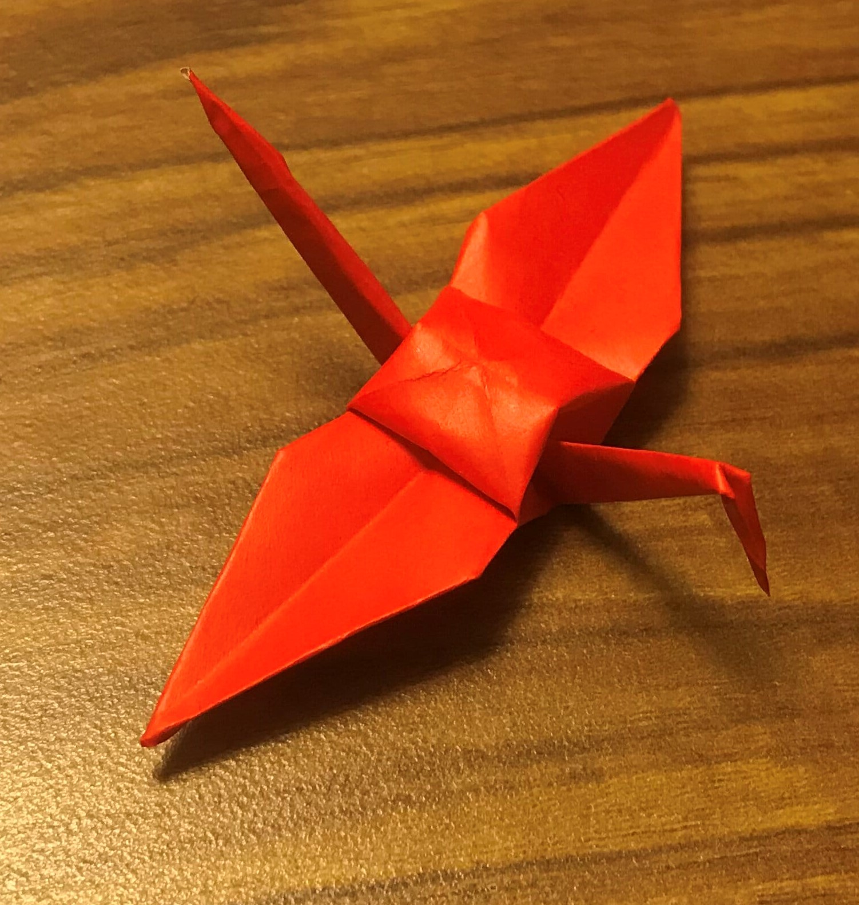
Paper crane
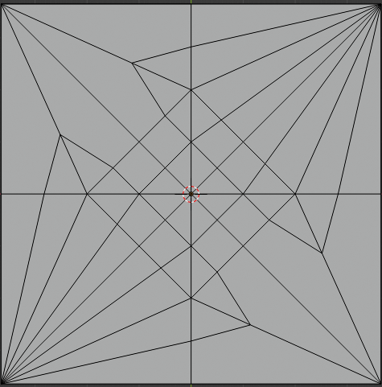
Theoretical folds of the paper crane in Blender
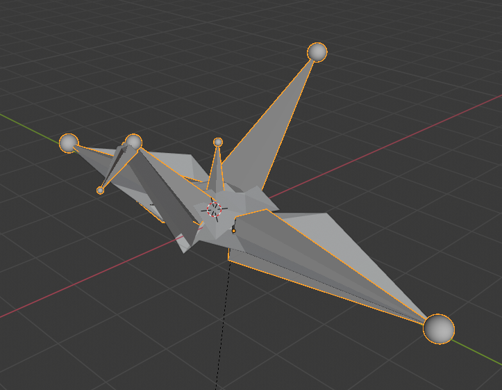
Theoretical paper crane in Blender with armature
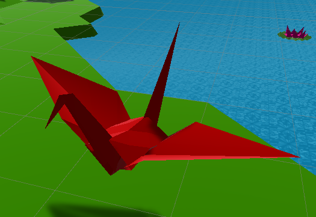
Final game asset in Unity
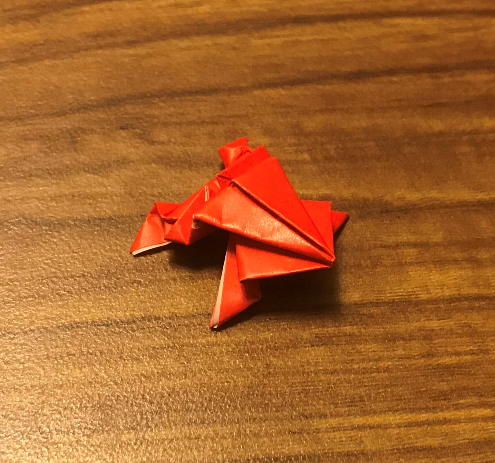
Paper frog

Theoretical paper frog in Blender with armature
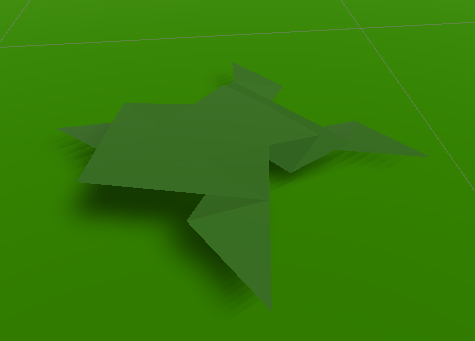
Final game asset in Unity
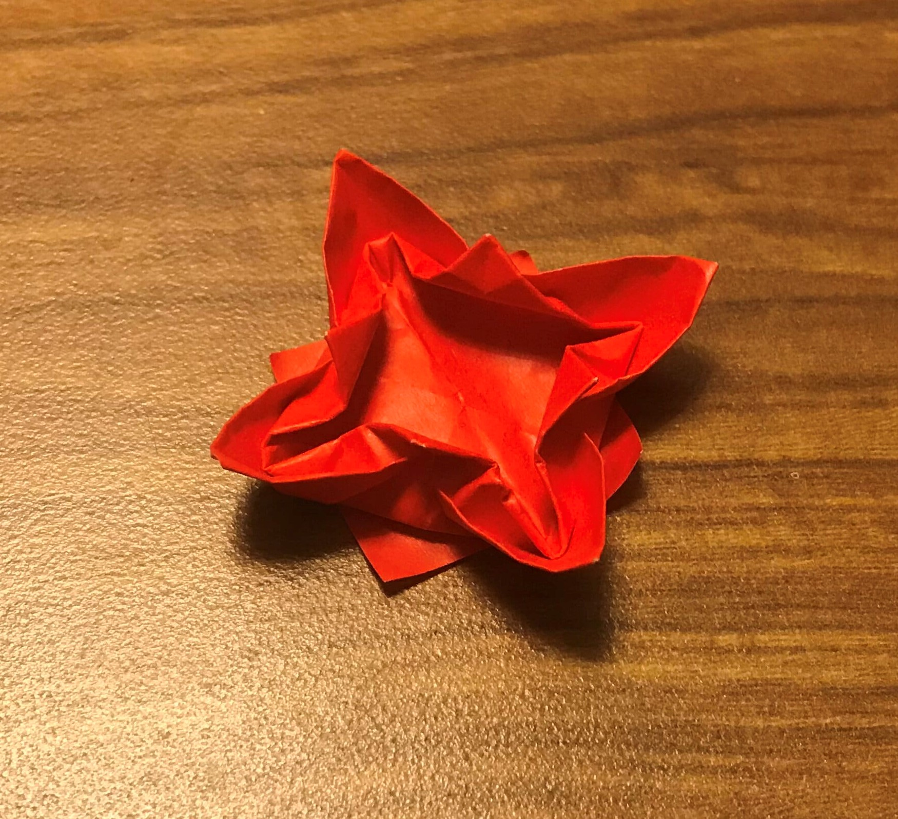
Paper water lily
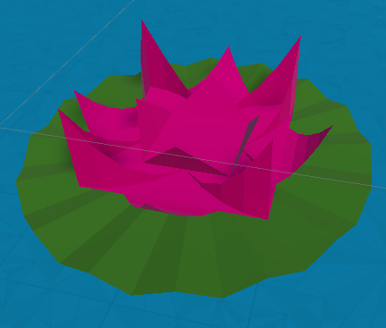
Final game asset in Unity
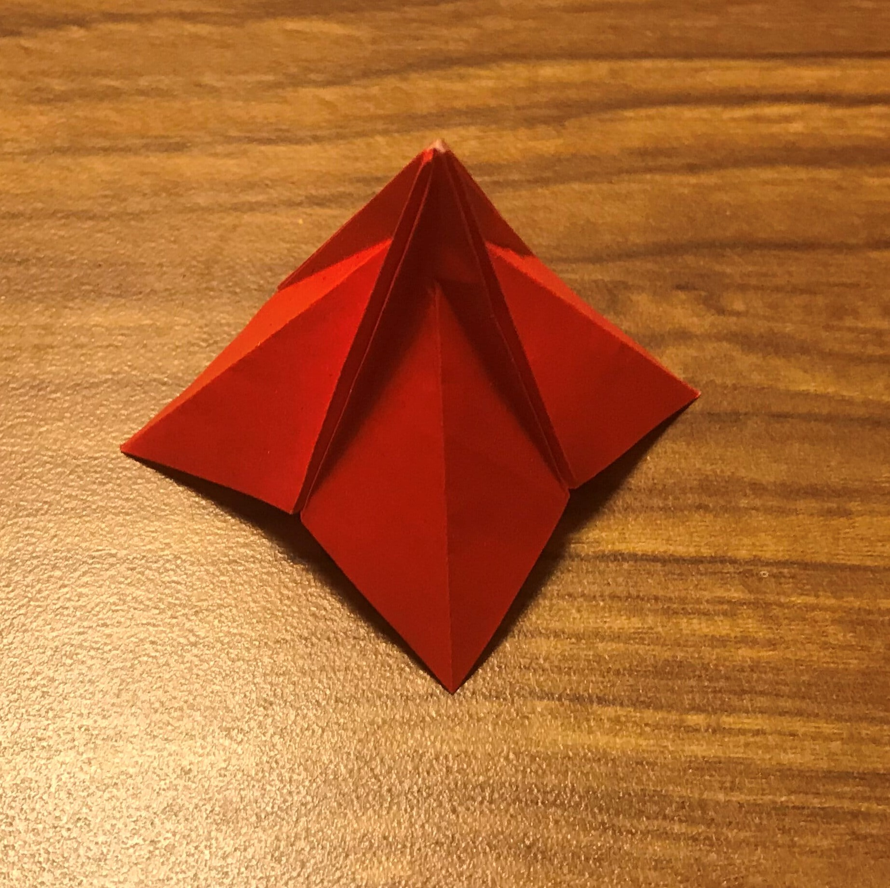
Paper Tree part (courtesy of Joe Nakashima)
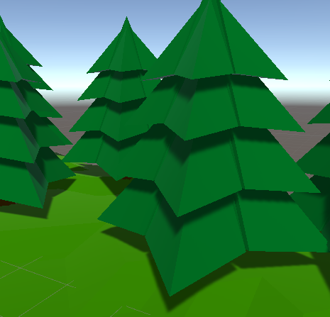
Final game asset in Unity
Modeling in Blender
In order to model accurate origami models, it was necessary to create those origami models to learn the fold patterns and the "theoretical" structure of the designs. By theoretical, I mean a design in which folding is precise and the thickness of the paper is 0. This is obviously congruent with modeling using a surface-based modelling system like blender. For each model, I started by folding the origami version of it myself. Next I unfolded the model to determine the fold patterns. These fold patterns were then translated into a face with all creases marked (see images right). I then used this information to ensure the scaling and proportionality of the models held in general. I opted for not truely folding the model within Blender using the rotate tool. Once the model was complete, it was ready to be animated.
Animating in Blender
I had previously been introduced to Blender animating in a Game Jam hosted by the Game Creation Club at The Ohio State University (GCC). Using a tutorial by Immersive Limit, I learned how to create armatures, weight painting, and poses. I attempted to animate a humanoid, which was difficult since humans can easily percieve anomilies in walking and running. As such, I knew sticking to non-humanoid origami figures would be feasile.
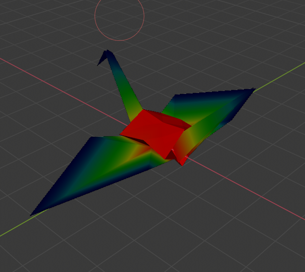Weight paint visualisation. Red denotes strong bone linkage and blue denotes weak bone linkage. Weight paint for the "root" bone is pictured.